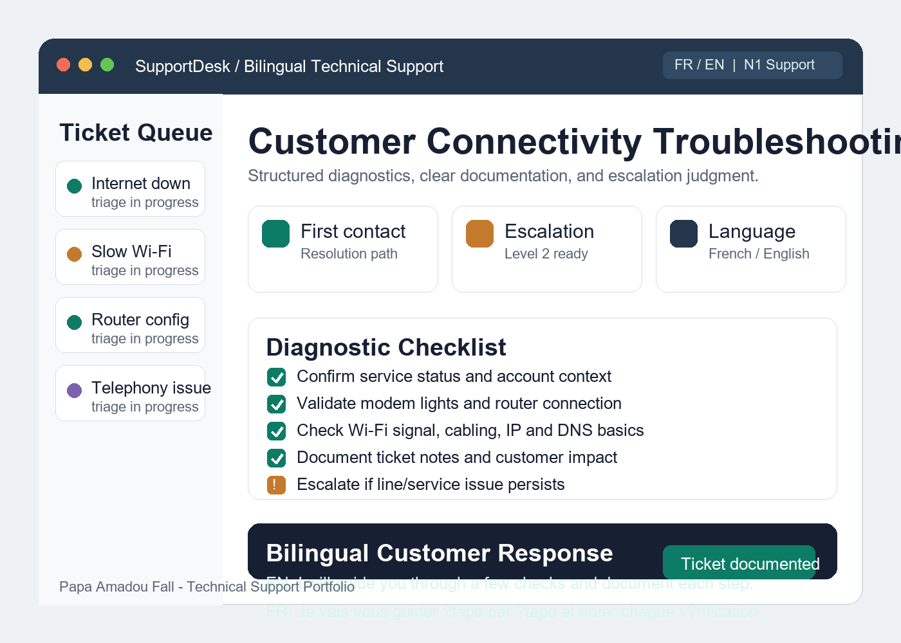

Troubleshooting
Internet connectivity, modem/router setup, Wi-Fi performance, telephony, device guidance.
Bilingual French-English | Campbell River, BC
I combine telecom technical support, customer communication, troubleshooting, web development, and process automation to help users solve problems clearly and efficiently.

Support Profile
My strongest professional path is user support technician: structured troubleshooting, clear documentation, escalation judgment, and bilingual customer support.
Internet connectivity, modem/router setup, Wi-Fi performance, telephony, device guidance.
Ticket documentation, procedure compliance, escalation, handling time, customer satisfaction.
Windows, macOS, Android, iOS, basic networking, IP, DNS, cabling, customer equipment.
JavaScript, TypeScript, React, Next.js, PHP, Python, MySQL, APIs, and n8n automation.
Portfolio Projects
Troubleshooting guides for connectivity, Wi-Fi, DNS, modem/router issues, and escalation decisions.
Read case studyA planned React tool for categorizing tickets and drafting clear customer replies in English and French.
Read case studyLead capture, CRM handoff, API workflows, and practical automation systems for small businesses.
Read case studyResponsive business websites and web support work using JavaScript, PHP, React, Next.js, and MySQL.
Read case studyExperience
Canadian workplace experience, customer service, POS operations, teamwork, punctuality, and shift discipline.
First-line technical support for internet, modem, router, telephony, ticket documentation, escalation, and bilingual service.
Web application maintenance, PHP, JavaScript, MySQL, updates, troubleshooting, and internal user support.
Contact
Best fit: Bilingual Technical Support Specialist, IT Support Technician, Help Desk Technician, SaaS Support Specialist, or Junior Web Support Specialist.